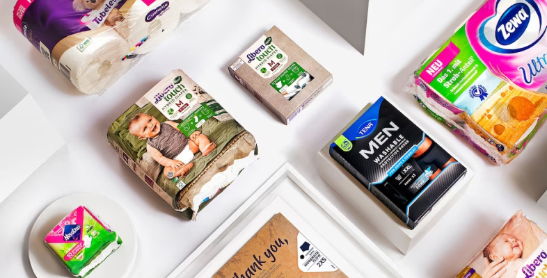

27 декабря, 2022
Компания Essity подводит итоги локализации производства бумажной
продукции в 2022 году
За девять месяцев функционирования в новых условиях одному из лидеров
российского рынка товаров для гигиены и здоровья — компании Essity
удалось наладить локальное производство более 70 новых артикулов
бумажной гигиенической продукции брендов Tork и Zewa, которое теперь
максимально не зависит от поставок импортного сырья.